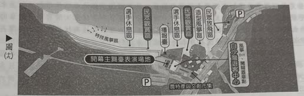
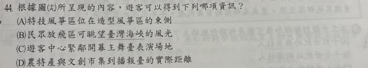
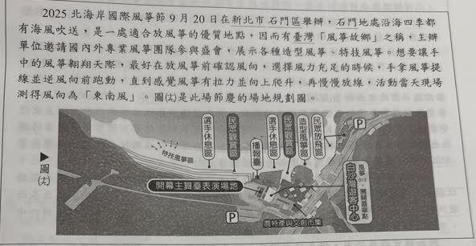

分享原卷｜第44題
完整原題
作答所需文章／材料
2025北海岸國際風箏節9月20日在新北市石門區舉辦，石門地處沿海四季都有海風吹送，是一處適合放風箏的優質地點，因而有臺灣「風箏故鄉」之稱。主辦單位邀請國內外專業風箏團隊參與盛會，展示各種造型風箏、特技風箏。想要讓手中的風箏翱翔天際，最好在放風箏前確認風向，選擇風力充足的時候，手拿風箏提線並逆風向前跑動，直到感覺風箏有拉力並向上爬升，再慢慢放線，活動當天現場測得風向為「東南風」。圖（九）是此場節慶的場地規劃圖。
根據圖（九）所呈現的內容，遊客可以得到下列哪項資訊？
(A) 特技風箏區位在造型風箏區的東側
(B) 民眾放飛區可眺望臺灣海峽的風光
(C) 遊客中心緊鄰開幕主舞臺表演場地
(D) 農特產與文創市集到播報臺的實際距離
先想一想，再查看答案、解說與原圖
原卷作答：原卷可見C
正確答案：C，遊客中心緊鄰開幕主舞臺表演場地。
逐項解析
| 選項與原句 | 判讀 | 句意與判斷理由 |
|---|---|---|
| (A) 特技風箏區位在造型風箏區的東側 | 不選 | 與圖中兩區的相對位置不合。 |
| (B) 民眾放飛區可眺望臺灣海峽的風光 | 不選 | 圖中未標示海域名稱，不能據此得到該資訊。 |
| (C) 遊客中心緊鄰開幕主舞臺表演場地 | 應選 | 中心與主舞臺的相鄰關係可由圖直接讀出。 |
| (D) 農特產與文創市集到播報臺的實際距離 | 不選 | 缺比例尺，無法計算實際距離。 |
詳細說明與解題步驟
【選圖上能直接看出的資訊】
圖中標示白沙灣遊客中心與開幕主舞臺表演場地，兩者相鄰，C是由圖面配置可直接讀取的資訊，因此選C。
【其他選項】
A：特技風箏區在圖面左側，造型風箏區在較右側；依一般地圖上北下南的讀法，不能把特技區說成在造型區東側。
B：圖中沒有標海域名稱，不能只靠場地配置圖得出「臺灣海峽」的資訊；本題也不是問憑地理常識猜海域。
D：沒有比例尺或已知實際長度，不能從簡圖算出農特產與文創市集到播報臺的實際距離。
【來源AI訂正】
原AI先選B，誤判遊客中心與舞臺相距很遠，後來才改C。本頁依原圖標示與相鄰位置選C；不採原AI自行補出的海域名稱或對圖面的錯誤描述。
核對註記：已依原卷或完整文字核對並獨立解題；對應教材課次未確認，歸綜合。
原圖（僅本題）

